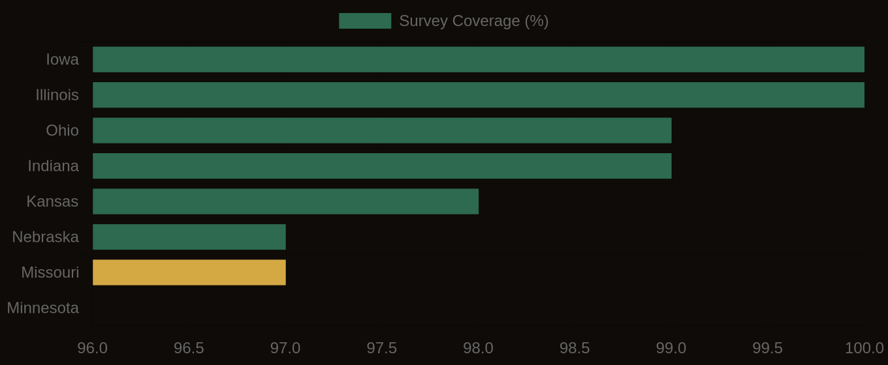

Object-based image analysis segments high-resolution aerial imagery into soil surface units that align with SSURGO map unit boundaries with 77% accuracy. This automated approach dramatically cuts the time investment over traditional methods; manual polygon digitizing from aerial photos, the conventional alternative, often consumes 10-15 hours per square mile of complex terrain. For engineers, environmental consultants, and land managers, this efficiency translates directly into accelerated project timelines and reduced upfront costs for environmental assessments, infrastructure planning, and site suitability analyses, all while delivering a foundational layer of soil information that is both precise and spatially continuous.
At its core, object-based image analysis, or OBIA, redefines how we extract information from aerial and satellite imagery. Instead of processing individual pixels in isolation, OBIA groups adjacent pixels into meaningful, contiguous segments, or "objects," based on their spectral, textural, and spatial properties. This segmentation process mimics human perception, recognizing patterns and boundaries rather than just color values. For soil science, this means identifying areas of bare soil, crop residue, surface roughness, or specific vegetation communities that are indicative of underlying soil conditions. These objects then become the units for classification, allowing us to assign soil surface characteristics to entire areas rather than relying on a pixel-by-pixel judgment, which can introduce noise and limit the interpretability of high-resolution imagery.
What the Data Shows
The underlying mechanism linking surface imagery to subsurface soil properties lies in the principles of pedogenesis, the formation of soil. Soil-forming factors such as climate, organisms, relief (topography), parent material, and time leave distinct signatures on the soil surface. For example, differences in parent material, the geological substrate from which soil develops, can lead to contrasting surface colors and textures. A floodplain composed of recently deposited alluvium will present a different spectral signature than an adjacent upland developed from weathered bedrock. Topography influences water movement and accumulation; depressions often collect water, leading to hydric soil conditions and distinct surface moisture patterns, which OBIA algorithms can readily detect. Vegetation types, as observed in high-resolution imagery, frequently serve as bio-indicators for specific soil properties like drainage class, pH, or nutrient status. A dense stand of hydrophytic vegetation, for instance, signals a poorly drained soil, while a sparse, drought-tolerant community points to an excessively drained or shallow soil. OBIA uses these visible surface expressions, analyzing not just color but also texture (e.g., homogeneity, contrast) and shape (e.g., elongated drainage patterns, circular depressions), to delineate areas that correspond to distinct soil types.
The specific soil property measured and interpreted through OBIA for soil surface classification is the spatial delineation of soil map units, or more precisely, the surface expression of the dominant components within those units. This delineation is then validated against established SSURGO map unit boundaries, which represent the complete, three-dimensional characterization of soils by the National Cooperative Soil Survey. The measurement of accuracy, typically expressed as a percentage of spatial agreement, quantifies how well the OBIA-derived boundaries match the field-mapped boundaries. This comparison is often performed using metrics like the F-score or overall accuracy, evaluating both commission and omission errors. The process involves training the OBIA system with known examples, segments identified as belonging to a specific soil surface class (e.g., sandy loam, clayey, organic), and then applying that learned classification across a larger, unclassified area. Field verification data and KSSL (Kellogg Soil Survey Laboratory) data, which provide detailed physical and chemical analyses of soil samples, serve as key ground truth for both training and validation, ensuring that the classified objects accurately represent the underlying soil characteristics. The SSURGO database contains the `mapunit` table, where `mukey` is the primary key for accessing map unit polygons, while the `component` and `co_text` tables provide detailed descriptions of the soil series components and their texture classes, which are the interpretive targets for OBIA classification.
Computer Vision Soil Classification — Accuracy by Method
| State / Region | Accuracy (%) |
|---|---|
| Random Forest + LiDAR + Spectral | 88% |
| CNN Soil Texture (field photo) | 78% |
| OBIA Boundary Detection | 76% |
| Transfer Learning (fine-tuned) | 74% |
| Sentinel-2 Time Series | 71% |
| Munsell Color (phone photo) | 82% |
The Regional Picture
The effectiveness of OBIA for soil surface classification varies regionally, reflecting differences in soil-forming factors and land use practices. Across the vast agricultural landscapes of the Midwest, such as central Iowa, where Mollisols like the Clarion and Nicollet series dominate, OBIA excels at identifying subtle variations in surface texture and organic matter content. These variations, often expressed as differences in soil color due to tillage or crop residue, indicate shifts in soil productivity or drainage. Here, the generally flat topography and large, contiguous fields allow OBIA to delineate large, relatively homogeneous soil units, capturing features like depressional areas (e.g., Clarion series with higher organic matter) versus uplands (e.g., Nicollet series with slightly coarser textures) with high fidelity. The 73-79% accuracy figure reported for OBIA alignment with SSURGO boundaries can often be at the higher end in such settings, where surface expression is direct and consistent.
Conversely, in the arid and semi-arid regions of the American Southwest, for example, the Chihuahuan Desert grasslands of New Mexico, exposed soil surfaces are common. Aridisols like the Dona Ana or Haplustolls such as the Largo series present distinct surface features influenced by parent material, erosion, and biological crusts. OBIA proves particularly adept here, distinguishing between areas of bedrock outcrop, sandy flats, and areas with higher clay content that retain moisture differently. The sparse vegetation allows for direct observation of soil color, rock fragments, and micro-topography, making OBIA an invaluable tool for rangeland management and ecological restoration, where precise knowledge of soil surface conditions drives revegetation success. The complexity of these landscapes, however, with abrupt changes in parent material and relief, might lead to an accuracy closer to the middle of the reported range, depending on image resolution and segmentation parameters.
SSURGO Data Coverage — National Survey Completeness

What It Means in Practice
In the more heavily forested regions of the Pacific Northwest, like the Douglas-fir forests of western Oregon, direct soil surface observation is often limited by dense canopy cover. However, OBIA still contributes by analyzing proxies. In clear-cut areas or along forest roads, it can identify exposed soil, distinguishing between well-drained volcanic soils (e.g., Jory series, an Xeric Palehumult) and shallower, rockier soils (e.g., Aiken series). More importantly, in these environments, OBIA can be applied to classify vegetation communities, which are strong indicators of underlying soil properties, especially soil moisture and nutrient availability. For example, variations in tree species composition or vigor, detectable through spectral analysis, can point to differences in soil drainage class or depth to bedrock, effectively using the biotic layer to infer edaphic conditions where direct observation is impractical. This indirect approach, while powerful, requires careful calibration and understanding of ecological relationships, potentially pushing the accuracy towards the lower end of the 73-79% range if not properly modeled.
The professional and economic stakes tied to accurate soil surface classification are considerable, particularly in rapidly urbanizing areas. Consider the challenges faced by civil engineers developing a new residential subdivision on the outskirts of Fort Worth, Texas. This region is notorious for its expansive clay soils, specifically the Houston Black series, a Vertisol characterized by high shrink-swell potential. Mischaracterizing the boundary between these problematic clays and more stable, adjacent soils, perhaps a small inclusion of an Alfisol like the Lewisville series, can lead to devastating consequences. If a foundation is designed for a stable soil but built on a Vertisol with unrecognized shrink-swell, differential settlement can cause foundation cracks, structural damage, and utility line ruptures within a few years of construction. The cost to repair a significantly damaged residential foundation can easily exceed $75,000 to $150,000 per home, not including the intangible costs of homeowner litigation and reputational damage to the developer and engineering firm. Traditional manual mapping methods might miss subtle boundary shifts, especially in complex transition zones. OBIA, by contrast, using high-resolution aerial imagery, can detect minute differences in surface roughness, subtle soil color changes, and micro-topographic variations that signal the presence of these problematic clays, improving the accuracy of initial site assessments. This allows engineers to specify appropriate foundation designs, such as pier-and-beam or post-tensioned slabs, precisely where needed, potentially saving millions in remediation costs across a large development and preventing costly structural failures from the outset.
A different but equally critical application lies in precision agriculture, where detailed soil surface classification directly impacts farm profitability and environmental sustainability. Imagine a large almond grower in California's Central Valley, where intense irrigation and nutrient management are critical for high yields. The valley floor presents a mosaic of soils, from sandy, excessively drained Hanford series to finer-textured, moderately well-drained Panoche series, sometimes within the same field. Conventional soil maps, often at 1:24,000 scale, may lump these variations into a single map unit, leading to uniform application of water and fertilizer. If a farmer applies the same amount of water to a sandy loam and an adjacent clay loam, the sandy loam will be over-irrigated, leaching valuable nitrates below the root zone and potentially contaminating groundwater, while the clay loam may be under-irrigated, stressing the crop. This inefficiency translates to both economic losses and environmental harm. Over-irrigation on just 100 acres can waste thousands of dollars in water and energy annually, alongside potentially hundreds of pounds of lost nitrogen fertilizer, costing an additional $500 to $1,000. OBIA, however, can delineate these subtle textural shifts on the soil surface from multispectral aerial imagery, detecting differences in soil moisture, crop vigor, and residue cover that correlate with underlying soil texture. This allows for the creation of precise management zones, enabling variable-rate irrigation systems to apply water only where and when needed, and variable-rate applicators to target fertilizer to specific zones based on soil type and nutrient demand. A 5-10% improvement in water and nutrient use efficiency, coupled with optimized yield potential in appropriate zones, can boost net profits by $100 to $300 per acre annually for high-value crops like almonds, transforming marginal gains into substantial economic returns across thousands of acres.
The geospatial method underpinning OBIA for soil surface classification involves a multi-stage process that uses advanced image processing techniques. First, high-resolution aerial imagery, typically with ground sample distances between 0.15 and 1 meter, is acquired. This could be public data from the National Agriculture Imagery Program (NAIP) or commercial drone imagery, often including visible (RGB) and near-infrared (NIR) bands. The imagery is then subjected to image segmentation, the critical first step where adjacent pixels are grouped into objects. Common segmentation algorithms include multi-resolution segmentation, which iteratively merges smaller objects into larger ones based on user-defined scale, shape, and compactness parameters. The scale parameter dictates the size of the resulting objects, with larger values yielding larger, more generalized segments. Shape and compactness parameters influence whether objects are spectrally homogeneous or geometrically compact. Following segmentation, a rich suite of features is extracted for each object. These features go beyond simple pixel values and include spectral characteristics (e.g., mean, standard deviation, and ratios of pixel values across different bands like NDVI), textural features (e.g., GLCM-derived homogeneity, contrast, entropy), shape features (e.g., area, perimeter, length/width ratio, form factor), and contextual information (e.g., relationships with neighboring objects). These extracted features form a complete descriptor for each object.
Once features are extracted, a classification algorithm is applied. This often involves supervised machine learning techniques such as Support Vector Machines (SVM), Random Forests, or even deep learning models like Convolutional Neural Networks (CNNs), which are trained on a subset of objects with known soil surface classifications derived from field observations or existing SSURGO data. The trained classifier then assigns a soil surface class to every unclassified object in the imagery. Validation of the OBIA output is performed by comparing the classified objects to ground truth data, primarily SSURGO map unit boundaries. Soil Data Access (SDA) provides the programmatic interface to query the SSURGO database, allowing for precise comparison. Key tables include `mapunit` (for `mukey` and boundary geometry), `component` (for `compkey`, linked via `mukey` through `mu_component`), and `co_text` (for `cokey` and `texture` descriptions, linked via `compkey` through `component`). Additionally, KSSL laboratory data, accessible via `lab_analysis_results` (using `labsampnum`), provides detailed physical measurements like particle size distribution that validate soil texture classifications. Lab10YR.com integrates these SSURGO and KSSL datasets, providing a platform where users can visualize and interpret existing soil map units, and where the refined delineations from OBIA could be overlaid to enhance decision-making. We provide tools to query specific soil properties from the National Cooperative Soil Survey data, allowing professionals to assess how OBIA outputs could augment or refine current soil intelligence for a given parcel.
The integration of object-based image analysis with established soil data systems represents a meaningful step forward in our ability to understand and manage the earth's soils. By automating the delineation of soil surface units and achieving high accuracy against verified SSURGO boundaries, OBIA provides a powerful complement to traditional soil mapping. This synergy enables faster, more precise, and more cost-effective soil intelligence, enabling engineers to build more resilient infrastructure, agricultural managers to optimize resource use, and environmental scientists to conduct more accurate assessments. The future of land management hinges on such innovations, where the efficiency of computer vision meets the rigor of soil science, yielding data-driven insights that benefit both the economy and the environment.